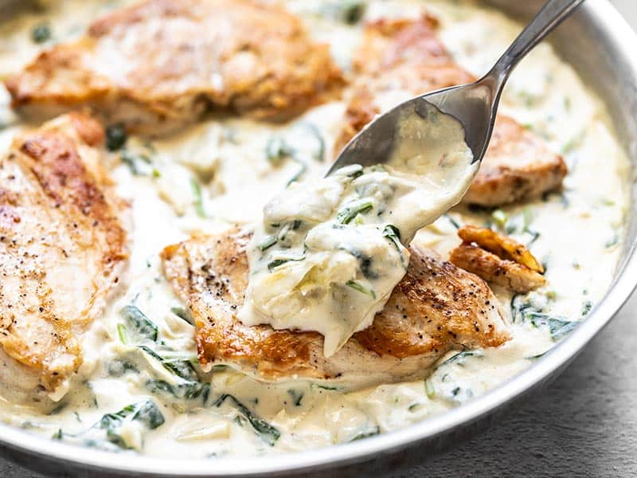

Creamy Spinach Artichoke Chicken

Description
Creamy Spinach Artichoke Chicken is a creamy and indulgent chicken dish that is fast and easy, but still impressive enough for date night.
This recipe includes quite a bit of luscious creamy sauce, so you’ll probably want to serve this over either pasta, rice, or with some crusty bread to wipe up all that sauce. If you’re trying to keep things low carb, you can serve this chicken over a steamed vegetable, like asparagus or broccoli, which would also be awesome with the creamy sauce.
Ingredients
- 2 boneless, skinless chicken breasts
- 1 pinch salt & pepper
- 1 Tbsp cooking oil
- 4 oz. fresh spinach
- 1 12oz. jar quartered artichoke hearts in water
- 4 cloves garlic
- 1 Tbsp butter
- 1/2 cup chicken broth
- 1/2 cup sour cream
- 4 oz. cream cheese
- 4 cloves garlic
- 1/4 cup milk
- 1/4 cup grated parmesan
- 1 pinch crushed red pepper
- salt and pepper to taste
Steps
- Place the chicken on a cutting board and cover with a sheet of plastic to prevent splatter. Use a mallet or rolling pin to gently pound the chicken out to an even thickness (about 3/4-inch thick). Slice each chicken breast in half to create two pieces each. Or, use thin sliced chicken breast filets. Season the breasts with a pinch of salt and pepper.
- Heat the cooking oil in a large skillet over medium. Once hot, swirl the oil to coat the surface of the skillet. Add the chicken breasts and cook until golden brown on each side and cooked through (5-7 minutes each side).
- While the chicken is cooking, roughly chop the spinach into smaller pieces. Drain the artichoke hearts and roughly chop them as well. Mince the garlic.
- Once the chicken is cooked through, remove it to a clean plate and cover to keep warm. Add the butter and minced garlic to the skillet and continue to sauté over medium for one minute or just until the garlic begins to soften.
- Add the chicken broth to the skillet and stir to dissolve the browned bits from the bottom of the skillet. Cut the cream cheese into chunks and add it to the skillet along with the sour cream. Whisk the ingredients together and continue to cook over medium, whisking continuously, until the cream cheese is fully melted and the sauce is smooth. Add the milk and stir until smooth again.
- Add the Parmesan, a pinch of red pepper flakes, and some freshly ground pepper to the skillet. Continue to heat and whisk for a couple minutes more. Finally, stir the spinach into the sauce, a handful or two at a time, until wilted (this should only take about a minute), then stir in the artichoke hearts.
- Return the chicken to the skillet and spoon the creamy spinach artichoke sauce over top. Serve hot.
Image and recipe from BudgetBytes.